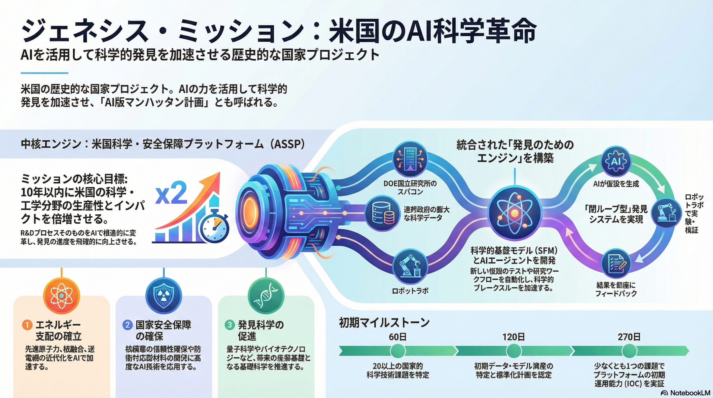

国家規模のAI科学プロジェクト始動
AIを活用して科学的発見を加速させる「Genesis Mission」が発表されました。
マンハッタン計画やアポロ計画に匹敵する規模で、10年以内に科学技術の生産性を倍増させることを目指します。
ASSPプラットフォームと戦略的投資
Genesis Missionは、17の国立研究所の計算資源とデータを統合するASSP (American Science and Security Platform)を構築。
エネルギー、国家安全保障、バイオテクノロジーなどの重要領域に集中投資し、AIを国家の戦略的インフラとして位置づけます。
詳細と主な特徴
DOE（エネルギー省）主導のもと、膨大な連邦科学データを基盤モデルの訓練に活用し、実験プロセスの自動化を推進します。
重要ポイント
目標
10年以内に科学技術の生産性・インパクトを倍増させる。
ASSP構築
スーパーコンピューター、AI、量子システム、実験装置を統合したプラットフォーム。
重点領域
エネルギー支配（核融合等）、国家安全保障、バイオ、半導体。